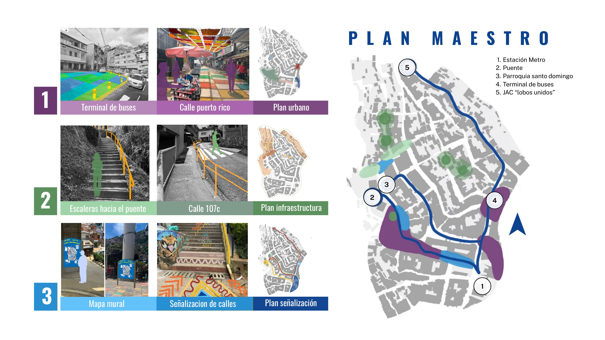

01
International Design Studio
Mobility in Santo Domingo Savio
A collaborative urban mobility study focused on pedestrian access, tactical urbanism, infrastructure repair, and wayfinding in Santo Domingo Savio. The team developed a master plan connecting low-, medium-, and higher-investment interventions across the neighborhood.
Urban PlanningAccessibilityTactical UrbanismInternational Collaboration
Open full project PDF →